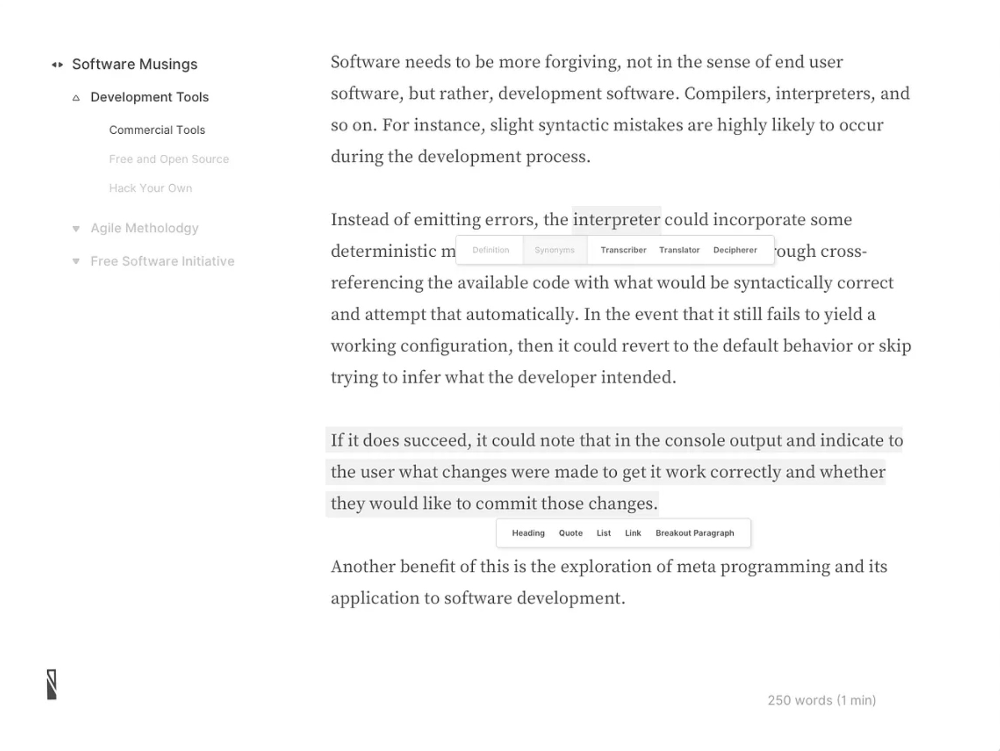

Plain markdown
Your files stay on disk as normal markdown. No lock-in, no imported library.
Skribe
A Mac-native markdown editor that opens your local docs folder and lets Claude Code stream edits into the active document.
Download for Mac
Your files stay on disk as normal markdown. No lock-in, no imported library.
The AI sidecar runs from the open folder so prompts can use sibling docs for context.
Warm paper, ink type, and only the chrome needed to keep you writing.